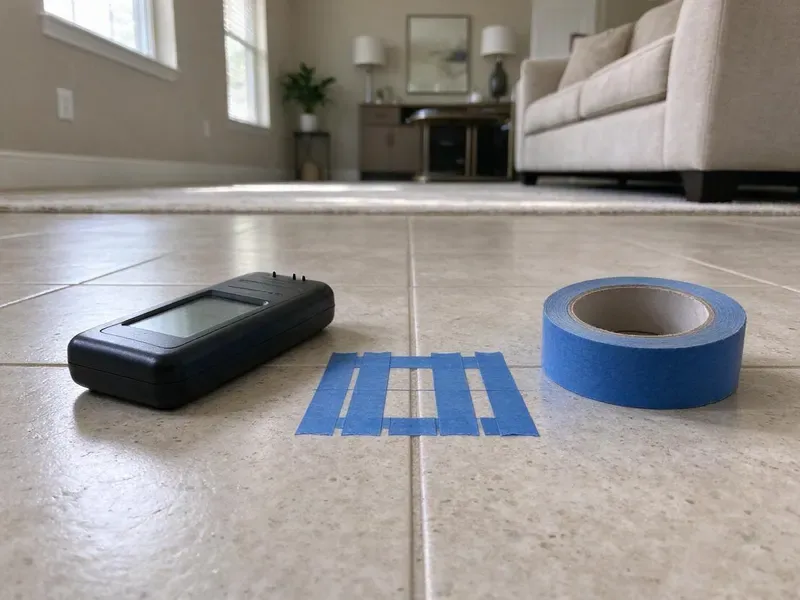
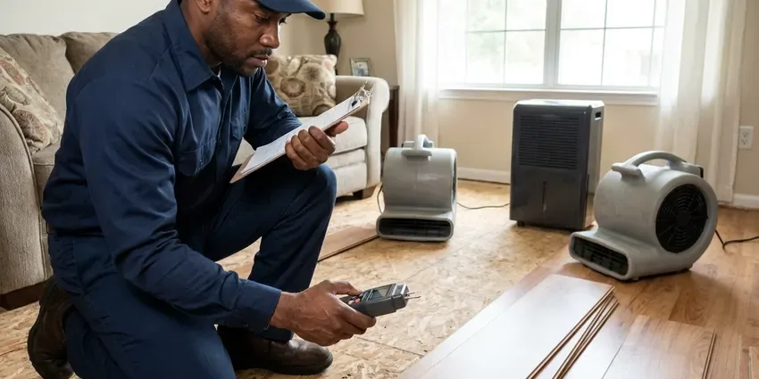

Commercial Plumbing in Rochester, MN
A dead flushometer or a backed-up floor drain can close a dining room by noon. CNV Plumbing keeps Rochester, MN businesses open and serving.
- Itemized Invoices
- Written Quotes
- Maintenance Plans Available
- Certified Backflow Testers
Backflow Test Coming Up in Rochester, MN?
Backflow reports go straight to your water provider, filed by us.
Steady Plumbing Service for Rochester, MN Businesses
CNV Plumbing treats plumbing problems at a business as lost revenue first and repairs second. A clogged main on a Friday night is a closed restaurant. Our dispatchers ask how many restrooms are down, whether water is on the floor and when you open, then send a plumber with the right parts for that building type. Most calls are finished in one trip.
Our expertise includes:
- Grease interceptor service and kitchen line jetting
- Commercial drain cleaning and high-pressure jetting
- Annual backflow testing with water provider reporting

Additional Plumbing Maintenance Services in Rochester, MN
Our maintenance and specialty plumbing services in Rochester, MN protect your home year-round and extend the life of every system.


Customers
Why Choose CNV Plumbing for Commercial Plumbing in Rochester, MN?
Code requirements for Rochester businesses go well past residential rules. Certified backflow testing every year, grease interceptors for kitchens and tempered water at hand sinks are all standard commercial requirements. We handle those. Your inspector sees a clean report instead of a correction notice.
- Minimal Downtime, Disruptive work happens before opening, after close or on weekends.
- Permitted Work, We pull Minnesota permits when the job calls for one and schedule the inspection so you do not have to.
- Business Continuity, We shut off only the affected zone so the rest of the building keeps running during the repair.
Citywide Coverage
Downtown storefronts, suburban shopping centers and warehouse districts in Rochester are all part of our regular routes. One trip handles most repairs. If a part is special order, we make the fixture usable before leaving and come back as soon as the part arrives.
Experienced Team
Each technician has worked in kitchens, medical facilities and multi-family buildings. Downtime is not abstract to them. Before any shutoff they stage parts, confirm the plan with your manager and keep the water off for as little time as the job allows.
Safety-First Approach
Our work is permitted when required and documented for inspectors and insurers. Certificates of insurance are available on request. Most property managers ask for a certificate naming them as additional insured before we start, and we can send that the same day you ask.
Trusted Certified Rochester Plumbing Services Professionals
At CNV Plumbing, we are proud to offer certified plumbing services throughout Rochester, MN. Credentials matter in this trade. Our plumbers hold recognized industry credentials, and they follow strict safety and quality rules on every repair, installation and maintenance call we run.
Call Us Now PHCC Plumbing Contractor Recognition
PHCC Plumbing Contractor Recognition Better Business Bureau (BBB) Accreditation
Better Business Bureau (BBB) Accreditation Angi Certified Pro
Angi Certified Pro ISO 9001 Quality Management Certification
ISO 9001 Quality Management CertificationBusiness Plumbing Services in Rochester, MN
Commercial Drain Cleaning and Hydro-Jetting in Rochester
Commercial drains carry grease, paper towels and food waste in volumes no house ever sees. A cable just pokes a hole. Our jetters push water at 3,000 to 4,000 psi through a spinning nozzle that scours the full pipe wall, which clears 4-inch and 6-inch lines back to bare pipe. Jetting keeps the line open for months instead of days. Restaurants, schools and apartment stacks are where we see the biggest difference.

Commercial Plumbing Costs and Maintenance Plans in Rochester, MN
Backflow tests often run $75 to $175 per assembly, and kitchen line jetting usually costs $350 to $900 depending on length and buildup. After-hours calls cost more. Putting testing, jetting and flushing on a plan evens out your costs and cuts down on emergency calls, which cost the most. Every plan comes as a written proposal.
After-Hours Commercial Plumbing in Rochester
Emergencies at a business cost more the longer they last, so speed matters more than the hourly rate. Water on the floor comes first. We isolate the leak, get restrooms and kitchen lines back in service and then schedule any larger repair for a slow period so you are not paying overtime on non-urgent work. Burst pipes, sewage backups and dead water heaters all qualify.
Backflow Testing and Certification in Rochester
Each backflow test takes about 30 minutes per assembly and requires a short water shutoff to that line. Plan for a brief outage. We read each check valve and the relief valve on a calibrated gauge and record the numbers on the standard test form. Passing devices get tagged. The provider gets the report from us, and we keep a copy for your next test.
Grease Trap Installation in Rochester
A new restaurant or a kitchen expansion usually needs a grease interceptor sized from the fixtures that drain to it. Under-sink traps work for small kitchens, while larger operations need in-ground interceptors of 500 gallons or more. Sizing is set by code. We work from your kitchen plan, set the unit at the right depth and vent it so it passes the pretreatment inspection on the first try.
Commercial Water Heater Repair and Installation in Rochester, MN
A commercial water heater is judged by recovery rate, the gallons it can reheat per hour, not by tank size alone. Undersized heaters run cold by mid-shift. Our techs work on AO Smith, Rheem, Bradford White and State commercial heaters and check flue draft, gas valves and the T and P valve each visit. New installs get sized from your peak hour demand. That is how a busy kitchen stops running out of hot water during the dinner push.
Grease Trap and Interceptor Repair in Rochester, MN
Food service sites need a grease trap or interceptor to keep fats, oils and grease out of the public sewer, and pretreatment inspectors check them. Odor is the first warning. We repair broken baffles, replace cracked lids and outlet tees, jet the inlet lines and confirm the unit is sized for your fixture count and flow rate. Slow sinks and overflow usually point to a full or damaged trap. We remind you to keep the pump-out log current for the inspector.

Slab Leak Detection for Businesses in Rochester
A slab leak under a store or office floor often shows up as a warm spot, a running water meter with everything off, or a crack in floor tile. Basements are the norm, so drain tile, sump pumps and foundation drainage are central to keeping homes dry. We confirm it with a meter test and pressure test, then use acoustic listening gear and thermal imaging to pinpoint the leak within a foot or two. Then we decide. Some leaks are best fixed with a small cut through the slab, while others are cheaper to abandon and reroute overhead. You get a price on each option.
Commercial Plumbing Near Me in Rochester, MN
Business owners looking for a commercial plumber near Rochester can expect CNV Plumbing to arrive fast. Our trucks carry flush valve kits, PRV cartridges, 4-inch fittings and backflow gauges, so the plumber who shows up can usually fix it on the spot. One visit covers most calls.
Our crews know the water providers, inspectors and code rules for Rochester businesses. That keeps your property compliant. Backflow tests get filed on time, permits get pulled when they are needed and your records stay in one place.
CNV Plumbing at a Glance
- Fully licensed plumbing team covering Rochester, MN
- Same-day appointments and 24/7 emergency response
- Clear written estimates, no hidden fees
- 4.8-star rated by 501+ Minnesota customers
Rochester Map
Rochester Information
- Population
- 122,413
- Area codes
- 507/952/612
- Service area
- Rochester and communities within 40 miles
- Nearby
- Lakeville, Apple Valley, Eagan, Burnsville
A busy restroom in Rochester, MN can see a month of household use in one shift, so valves and drains wear out faster. Extremely cold, long winters are the biggest stress on plumbing in Minnesota, and incoming water stays cold for much of the year.
Expert Services
Call CNV Plumbing for reliable plumbing work done by licensed pros in Rochester, MN.
Our Specialized Plumbing Services in Rochester, MN
At CNV Plumbing, you get every kind of plumbing service from one company across Rochester, MN. From leak detection to full system installs, our team works fast and charges fair prices on homes and commercial properties alike. Take a look at our core services below:


Our Commercial Service Process in Rochester, MN
Our commercial process in Rochester is built around one thing: getting the repair done without closing your doors.
Schedule the Visit
Call (612) 712-9569 and tell us about the property. We book a plumber or estimator at a time that fits your operation.
Assess and Propose
We inspect the system, explain the options and put the price in writing. Work starts only after you approve it.
Complete and Document
We finish the work, test it and send photos, test results and the invoice for your records.
Frequently Asked Questions About Commercial Plumbing in Rochester
Prices in Rochester depend on the work and the time of day. A cleared kitchen drain might be $150 to $400. A commercial water heater replacement can run $2,000 to $10,000 or more, and a full building repipe is usually priced in the tens of thousands depending on floors and fixture count. Every quote comes in writing after a site visit.
Repeat clogs in the same drain mean a problem in the line, not just a bad day. A sudden jump in the water bill usually means a hidden leak or a stuck flush valve. Rust-colored water, weak pressure on upper floors or a sewer smell that comes and goes are also worth a call before they turn into a shutdown.
Hydro-jetting sends water at 3,000 psi or more through a nozzle that scrubs the inside of the pipe. Cables punch through, jetters clean the full circumference. For kitchens that build up fats, oils and grease, jetting stretches the time between backups from weeks to months, and it does not damage sound pipe when it is done at the right pressure.
Most water providers want commercial backflow assemblies tested once a year. We send reminders and file the results for you.
Yes. Burst pipes, sewage backups and dead water heaters get answered any hour. While the plumber drives over, we can walk your staff through shutting off the main so the damage stops growing.
It depends on what goes down them. Restaurants often need kitchen lines jetted every one to three months because grease builds up fast. Offices and stores with only restroom traffic can often go a year, assuming paper towels and wipes stay out of the toilets.
Many restaurants need service every one to three months, based on how busy the kitchen is. Your pretreatment program may set a required interval, and we can keep you on it.
Our crew works from your plans, files permits and works alongside your GC. We schedule inspections ahead so your opening date holds.
What People Are Saying About Our Plumbing Experts?

Karen W.
After our third pinhole leak in copper, we stopped patching. CNV Plumbing gave us a written plan room by room and repiped the house in PEX while we stayed in it. The crew covered our floors every morning and cleaned up every night.
Repiping · Apple Valley, MN
Carlos V.
Our house still had galvanized pipe, and upstairs the shower was a trickle. The crew repiped everything in PEX over three days and patched every drywall hole before they left. The pressure difference is night and day.
Repiping · Rochester, MN
Lisa C.
Water was pouring out from under the washing machine on a holiday weekend. CNV Plumbing talked me through closing the valves over the phone and had a plumber at the house within ninety minutes. It was a burst fill hose.
Emergency Plumbing · Rochester, MN
Paul B.
Our pit pump ran nonstop even in dry weather. The plumber found the check valve was stuck open, so the same water kept cycling back into the pit. New valve, new float switch, done in an hour. It runs quiet now.
Sump Pump · Bloomington, MN
Monica A.
Our water bill nearly doubled in one month with no change in how we used water. The tech checked the meter, heard the leak under the hallway with his equipment, and opened a hole about a foot square. Fixed the same day.
Slab Leak Repair · Rochester, MN
James P.
Our restaurant had a slow leak at the hand sink that was rotting the cabinet base. CNV Plumbing came in at six in the morning before prep, replaced the trap and both supply lines, and was packed up before my first cook clocked in.
Commercial Plumbing · Woodbury, MN